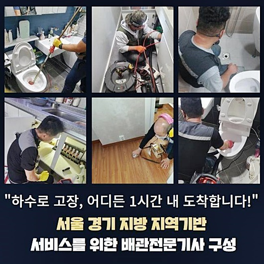
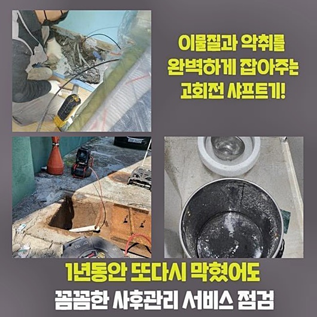
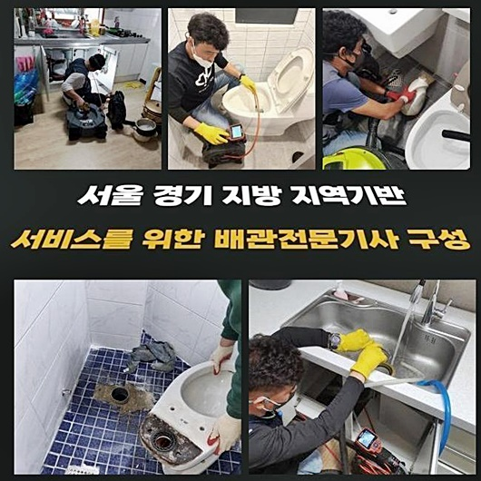
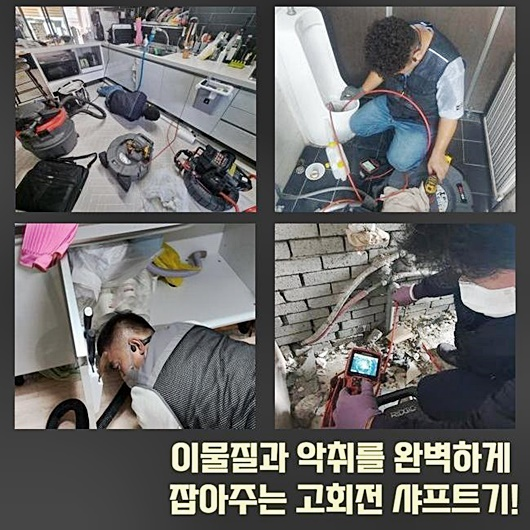
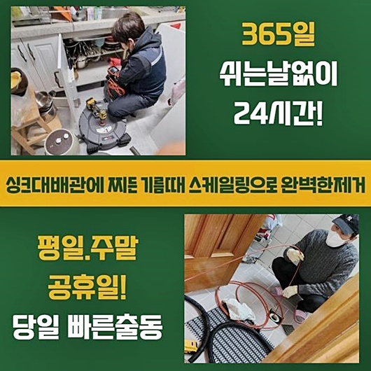
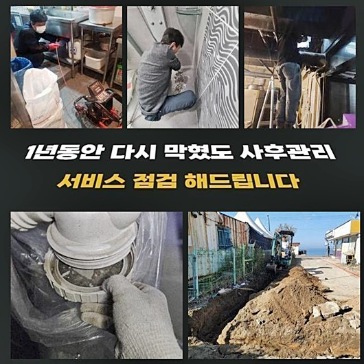

🏠 미추홀구 도화동싱크대역류 주안동 악취차단 출장수리
용인 싱크대막힘 전문 시공 후기

📋 작업 개요
- 위치: 용인
- 서비스 유형: 싱크대막힘, 하수구막힘, 배관막힘, 역류해결, 뚫는업체, 배관청소, 설비공사, 악취차단
- 작업 일시: 2024. 7. 26. 9:59
- 업체명: 하수구수사대 (010-5615-2118)
🔍 문제 상황
미추홀구 도화동싱크대역류 주안동 악취차단 출장수리
어디에서든지 하수관은 꼭필요한 시스템이에요
갑작스럽게 배수구가막혀 원활하게 배수되지못하면 불편하겠죠
인터넷검색으로 방법을연구하여 가벼운조치로 시도할순있지만 이물로인해 꽉 막힌상황이라고 한다면 전문업체의 지원을받는게 가장알맞은 선택이라고할수있죠
저희들에게 의뢰하신분중 갑작스럽게 발생된 막힘으로인하여 심각한곤란함을 겪으신경우도 있답니다
이번고객은 인테리어에대한 공사가이루어진지 며칠도지나지 않아서 어떠한이유로 막히는일이 발현된건지 곤란해하셨죠
빠른해결을 원하였고 저흰 첨단도구들을 준비해서 신속한출동으로 방문할수있었죠
일반적인 가정에서는 씽크대나 욕실등 하수구막힘이 주로 발생하는데요
막힘이 발발되면 많은불편이 생길수있습니다
주방쪽에서 물이용이 어려워진다면 일상생활이 진행될수없는 상태가되는데요
막힘현상을 처리하기위해 고객님께선 공휴일에 내방을원하셨고 원하시는 시간에맞춰 내방해드렸죠
주말하고 쉬는날까지도 포함시켜 새벽시간까지도 시공이 가능하기에 시간상관없이 전화하시면 빠른방문이 가능하겠습니다

🔎 원인 분석
💡 전문가 진단: 정밀 진단 장비를 사용하여 슬러지의 고착 여부를 판명하고 타격/세척 작업을 실시했습니다.
요근래부터 물빠짐이 느려지게되더니 그저께부터 꽉막혔다고 말씀하셨죠
셀프조치로 뚫는것을 시도했지만 단순한 통수만진행되었고 동일한문제들이 지속적으로 발현한다고 하셨는데요
신속한 방문을드린후 씽크대를 점검해보았죠
배수상태가 정상적이지않아 잔해물질들도 쌓이고쌓여 역류현상까지 발현된것으로 보였죠
하수관을 막아버린 원인이뭔지 알아낸뒤 해결해보기위해 배관내시경을 통하여 하수구안쪽을 살펴봤습니다
배수구입구 주위에있는 이물의경우 쉽게제거가 가능했지만 깊숙히 위치하고있는곳에 있는것은 샤프트기계를 사용해서 외부쪽으로 끌어내야했어요
불행중 다행이었던것은 오랜시간동안 퇴적되지 못했으므로 쉽게제거가 가능했어요
자세하게 체크해보니 막힌이유였던 이물의 형태를보니 장판조각인것이 파악되었는데 이게 도대체 왜이쪽에서 나오게된건지 알수가없었네요
의뢰자도 이물의정체를 모르는상태였고 장판조각을 확인하시고는 놀라셨습니다
플렉스샤프트기로 분해과정을 진행할땐 작업자분의 실력또한 중요하다고할수있죠
염려하지않으셔도 되겠습니다! 확실하고깔끔히 처리할것을 확인할수있어요!
다음장소에 방문해서 문제점을 파헤쳐보니 배수구에서 역류하는현상이 일어나고있었는데요
막힘문제를 신속히 뚫기위해선 근원적인원인을 알아내야합니다

🔧 작업 과정
누누히 강조드리지만 물이깔끔하게 흘러야하지만 막힘으로인해 물이넘쳐버리면 일상에 큰불편함을 초래시킨답니다
배관안속에서 문제가 발생하게된것을 알수있었네요
다양한 작업경력과 노하우를통하여 최첨단장비들을 사용해서 세심하게 작업해드렸죠
내시경과 플렉스샤프트와 같은 전문도구를 쓴다면 하수도내부와 오염상태까지 확실하게 파악이가능하고 이를통하여 작업시작전 필요한정보에 대하여 습득할수있어요
오염물이퇴적된 배관이라면 좋지못한 냄새가나기에 신속대처를 해야합니다
하수구내부상태를 체크한뒤 정확하게조치하여 역류증세를 해결할수있었죠
다음현장은 싱크대막힘이 발생된곳이었는데 이에대하여 신속해결을 원하셨는데요
음식조리를 할때나 설거지를해볼때 물이흐르지않고 역류까지보이는 상태임을 말씀하셨어요
고객의 일상편의를 불편하게하는 역류증세가 계속해서 나타나면 2차적인 문제로 이어질수있기에 신속대응으로 막힌이유를 알아내기위해 스케일링과정을 진행하기로했는데요
내시경끝쪽에는 랜턴과 카메라까지 달려있어서 내부지점까지 점검할수있죠
싱크대막힘에서 흔하게보이는 기름이물은 제거해내기가 어렵습니다
이런상황에선 물을쏟아부어 부피를늘려본뒤 썩션장비를 활용해서 흡입하는방식을 진행할수있어요
고착이물이 쌓여있다면 분쇄장비를 투입하여 이물을분쇄하고 흡입할수있어요
하수관안이 깊다고하더라도 청소할수있죠
내시경을사용해 꺾여있는 배관까지도 파악할수있고 나머지장비로 이물을흡입해 원래의 배수흐름으로 만들어주죠
고객분에게 작업과정을 안내하는부분도 중요하다고할수있어요
하수구시스템이 무너졌을때 방치할경우 심각한문제로 이어져서 막대한피해를 받을수있으니 조속히 조치하시는걸 추천드리겠습니다
혼자서해결하려고 날이선 물체들로 배관안에 쑤신다든지 주변마트에서 살수있는 클리너제품을 이용한다면 일시적해결로만 연결될수밖에 없답니다
전문업체를 호출해서 어떤문제인지 꼼꼼하게살펴보고 알맞은조치를 취해야해요
그렇기때문에 하수구가막혔을땐 조속하고 전문적인대책이 필요하겠습니다


✅ 작업 완료
가볍게여기지말고 현상을 보이는즉시 해결하시는걸 권고드릴게요
심혈을기울여서 여러문제에대한 막힘현상을 확실히 잡아드릴것을 약속할게요!
배관과관련된 문제로인해 곤란하다면 전화주세요!
전국어디라도 60분안으로 도착이가능하며 작업과정들을 일러드린뒤 착수하고있기에 걱정하지않으셔도 됩니다!
이밖으로도 궁금하신게 있다면 시간상관없이 문의주셔서 물어봐도되니 편안하게 의뢰주시면 친절한상담으로 진행해보겠습니다
앞으로의 배관막힘문제 저희업체와함께 해결해보는건 어떠실련지요



⚠️ 주방 싱크대 배관 막힘 예방 수칙
- ✅ 기름기가 묻은 식기나 프라이팬은 설거지 전 키친타올로 반드시 기름때를 닦아내세요.
- ✅ 주기적으로 싱크대 개수대에 뜨거운 물을 가득 받아 한 번에 내려 배관 내부 기름을 씻어내세요.
- ✅ 배수구 거름망을 미세한 필터로 사용하시고 음식물 찌꺼기가 틈으로 새어 들지 않게 관리하세요.
- ✅ 베이킹소다와 식초를 뜨거운 물과 함께 일주일에 한 번씩 부어주면 배관 살균과 막힘 예방에 좋습니다.
💡 핵심 정리
- 확실한 장비 작업(내시경 점검 및 샤프트 스케일링)으로 원인을 뿌리 뽑습니다.
- 작업 후 1년 이내에 동일한 부위 재발 시 100% 무상 A/S 서비스를 보장합니다.
- 서울 · 경기 · 인천 전 지역에 24시간 언제든 긴급 출동할 수 있도록 항시 대기 중입니다.
❓ 자주 묻는 질문 (FAQ)
🚨 용인 싱크대막힘 문제로 고민이신가요?
정확한 원인 진단과 확실한 시공으로 재발 없는 해결을 약속드립니다.
24시간 긴급 출동 | 서울 · 경기 · 인천 전지역 | 1년 내 재발 시 무상 A/S